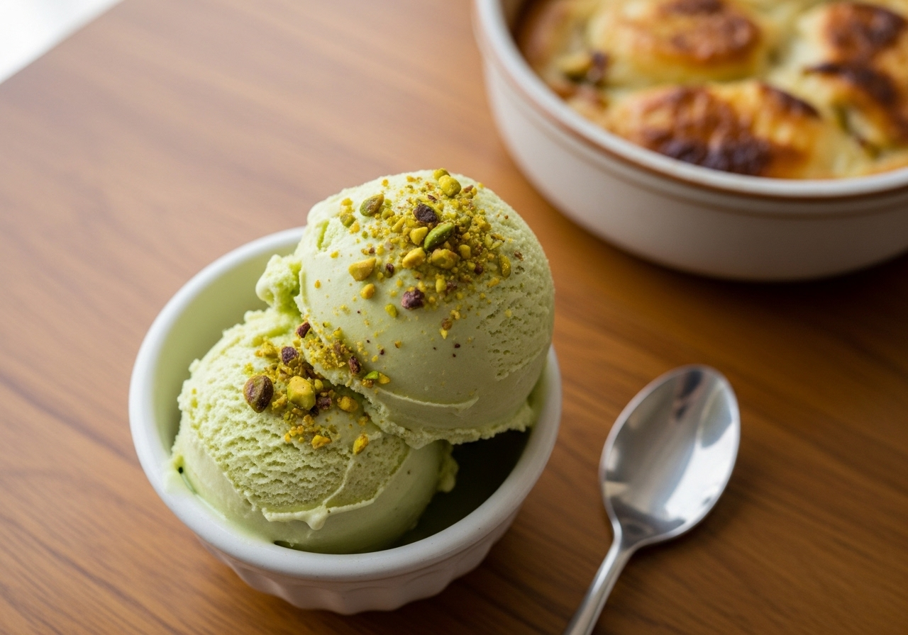

← Alle recepten

🍽 1 pint (4 porties)
⏱ Voorbereiding: 10 min
🔥 Bereiding: 24 uur
Σ Totaal: 24 uur 10 min
Ingrediënten
- 80 g ongezouten pistachenoten, gepeld
- 1 el suiker (voor de pistachepasta)
- 120 ml volle melk
- 120 ml slagroom
- 100 g gecondenseerde melk
- 1/2 tl amandelextract
- Snufje zout
- Enkele druppels groene kleurstof (optioneel)
Bereiding
- Maal de pistachenoten met de suiker in een keukenmachine tot een fijne, plakkerige pasta.
- Klop de pistachepasta, melk, slagroom, gecondenseerde melk, amandelextract, zout en eventueel de kleurstof in een kom tot een glad en egaal mengsel.
- Giet het mengsel in de Creami-pint tot maximaal de vullijn en vries minimaal 24 uur plat en waterpas in.
- Draai het ijs op de stand Ice Cream. Kruimelig? Draai nogmaals met Re-spin tot het romig is.